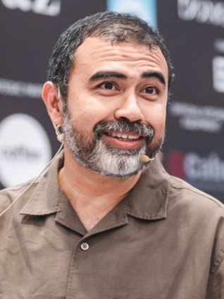

This is the part for the nerds and the romantics. Not the pitch — the pour. Seduh Score is what happens when a guy who makes coffee for a living starts vibe-coding a regional coffee competition platform — one evening, one cycle, one Brunei place at a time.
Every development cycle takes the name of a place, spiralling outward from the capital's core toward the frontier — the same direction the thing keeps growing. Here's how far the pour has reached, and what each cycle actually cost to make.
Seven cycles shipped, from the urban core out to the oil town. Each one a place, each one a version, each one a season of evenings.
Scroll — the extraction line fills as each cycle landed. One line for the machine, one line for the maker.
Grey Matter Coffee Werks · Brunei — coffee first, code second, both stubborn.

In the coffee scene since 2012. TwentyFive — the spiritual predecessor to Grey Matter — started in 2017; Grey Matter Coffee Werks has carried it forward for the last five years. A competitor at ABTC since 2023, and a judge for Malaysia's national coffee competition in 2019, alongside various local competitions.